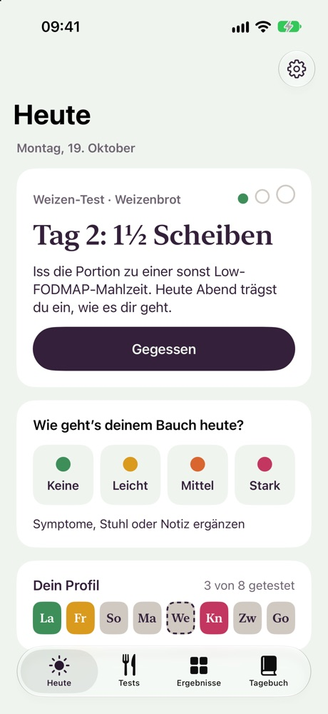
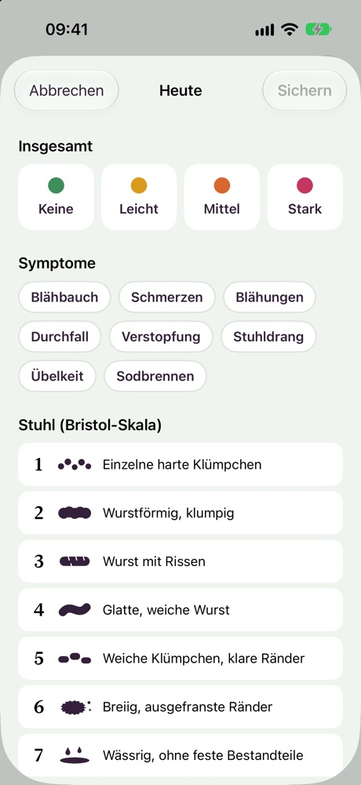
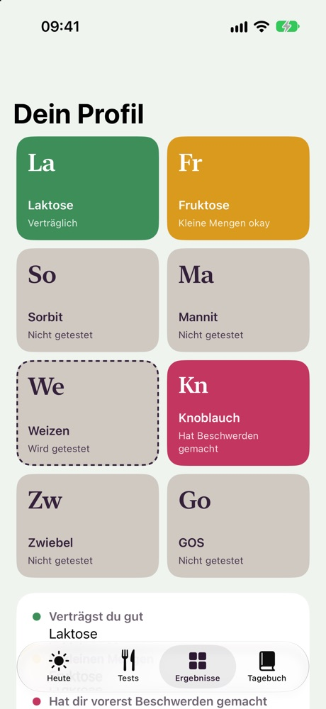

Weglassen war nie das Ziel.
Back on the Menu begleitet dich durch die Wiedereinführung nach Low FODMAP. Eine Lebensmittelgruppe nach der anderen, drei Tage mit wachsenden Portionen und am Ende eine klare Antwort: was geht, wie viel, und was du vorerst nur wenig isst.
Bald im App StoreFür iPhone, auf Deutsch und Englisch.
- Kuhmilch Verträglich, 250 ml
- Weizenbrot Verträglich, 2 Scheiben
- Honig Kleine Mengen okay, 1 TL
- Knoblauch, gegart Hat Beschwerden gemacht, vorerst
- Zwiebel, gegart Heute Tag 2, 40 g
- Avocado Noch nicht getestet
Ein Lebensmittel, drei Tage, zwei Pausentage.
Am Beispiel Knoblauch. Das sind übliche Startmengen. Wenn deine Ernährungsberatung andere vorgibt, nimm diese.
- Tag 1¼ ZeheIss sie zu einer sonst FODMAP-armen Mahlzeit. Am Abend trägst du ein, wie der Tag war.
- Tag 2½ ZeheGing gut? Dann etwas mehr.
- Tag 31 ZeheEine normale Portion.
- Tag 4 und 5PauseWieder Low FODMAP, damit der nächste Test ruhig startet.
Bringt eine Portion mittlere oder starke Beschwerden, endet der Test dort und die Pause beginnt früher. Jeder Test endet mit einer von drei Antworten: verträglich, kleine Mengen okay oder hat Beschwerden gemacht, vorerst.
Verträglichkeit ändert sich. Du kannst jede Gruppe später noch einmal testen.
Ein Plan, ein Tagebuch und eine Seite für deine Ernährungsberatung.
- Ein Check-in am Abend
- Bewerte den Tag mit einem Tippen und ergänze Symptome, die Bristol-Stuhlskala oder eine Notiz. Dieser Check-in bewertet die Portion, die du gegessen hast.
- Acht Lebensmittelgruppen
- Laktose, Fruktose, Sorbit, Mannit, Weizen, Knoblauch, Zwiebel und GOS, jede mit einem Testlebensmittel und drei Portionen in Gramm und Millilitern.
- Dein Lebensmittelprofil
- Was gut ging, was in kleinen Mengen geht und was du vorerst wenig isst, als Bild zum Teilen.
- Eine Seite für deinen Termin
- Ein PDF-Bericht für deine Ernährungsberatung oder Arztpraxis, statt wochenlang durch Notizen zu scrollen.
- Dein Tagebuch bleibt deins
- Kein Konto, keine Server. Alles bleibt auf deinem iPhone, mit Backup-Datei und CSV-Export.
- Deutsch oder Englisch
- Die Sprache stellst du in der App ein, unabhängig vom iPhone.



Kostenlos starten.
Kostenlos
Dein erster Lebensmitteltest, das Tagebuch, das Bild deines Profils, Backups und der CSV-Export.
Pro
34,99 € im Jahr nach einer Gratiswoche oder 59,99 € einmalig
Alle weiteren Tests und der PDF-Bericht. Das Jahresabo kannst du jederzeit kündigen; die App erinnert dich zwei Tage vor Ende der Gratiswoche.
Preise für Deutschland und Österreich. In der Schweiz CHF 25.– im Jahr oder CHF 40.– einmalig.
Ein Tagebuch, keine Diagnose.
Back on the Menu hilft dir, die Wiedereinführung nach Low FODMAP festzuhalten. Die App stellt keine Diagnose und behandelt nichts. Besprich Änderungen deiner Ernährung vorher ärztlich oder mit deiner Ernährungsberatung.
Lass dich zuerst ärztlich untersuchen und teste nicht auf eigene Faust, wenn du Blut im Stuhl, unerklärten Gewichtsverlust, Fieber oder Beschwerden hast, die dich nachts wecken, oder wenn die Beschwerden erst nach dem 50. Lebensjahr begonnen haben.